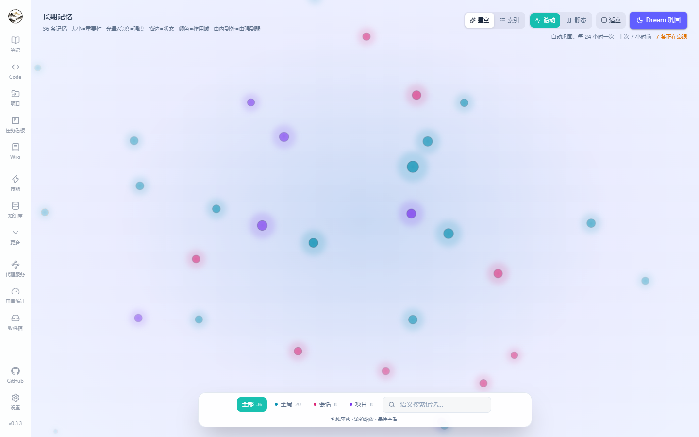

Memories & Dream
Memories carry context across sessions: preferences, identity, working habits, stable facts. Entry: Memories (route /memories).
Memory fields
| Field | Details |
|---|---|
| Content | One fact or preference; the more specific, the better the recall |
| Category | Preference / identity / work / habit / knowledge — used for filtering and counts |
| Importance | 1–5 stars; affects recall ranking and how fast it decays |
| Scope | Global / session / project — determines the contexts it is injected into |
| Lifecycle | Last access time, access count and state (fresh / decaying) maintained by Dream |
When memories are used
- The “Memory” toggle above the input recalls by similarity within the current scope (global ∪ session ∪ project) and injects the results.
- The model can also call the
search_memorytool on its own. - Scope isolation matters: project details never leak into unrelated conversations, and session preferences do not pollute global memory.
Memory graph
- Visualizes memories by association, making duplicates and contradictions visible.
- Filter by scope (all / global / session / project); hover for content.

Dream consolidation
| Parameter | Effect |
|---|---|
| Decay days | Memories not accessed within this window are marked “decaying” |
| Forget days | Low-importance memories untouched beyond this window are forgotten (deleted) |
| Interval | Automatic consolidation cadence, 24 hours by default and configurable |
| Phases | Merge duplicates → decay stale information → forget useless entries, then report counts |
The page shows the last run and how many memories are decaying, and you can trigger a consolidation manually.
Practical advice
- Keep stable preferences as global memories (“answer in Chinese, code comments in English”).
- Project-specific conventions belong to project memories so they travel with that context.
- Store one fact per memory for easier merging and forgetting; long content belongs in a note that gets indexed instead.